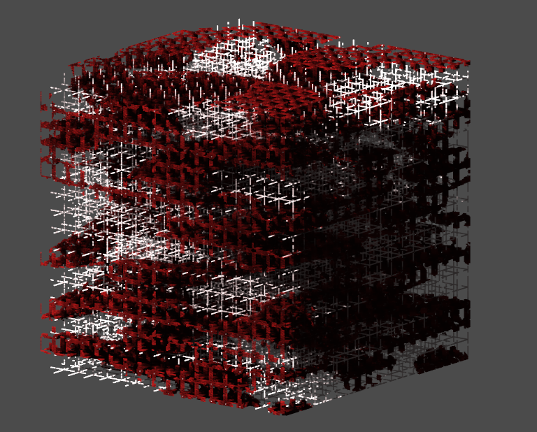

Voraldo v1.0 - An Interactive Volume Editor
Firstly, you'll note that it's relatively difficult to pick good pictures for what amounts to an image editor. This project has been my baby for quite some time now and I have a huge amount that I could say about it - in a big way, it represents a very concrete representation of how I visualize things in my own mind. For the purposes of this writeup, I will be sticking to the the important parts of the implementaion and leave the exhaustive detail of each operation for later. Since starting on this iteration of the project, I have gained a lot of experience and am already planning a number of pretty significant architectural changes for the next.

Background
I'll just go ahead and say, there is much more complete coverage of these in the writeup on the old versions of Voraldo - I will just very briefly cover their influence on this project here. I call this project a volume editor - this is a field that was very much underserved when I started doing this, but now there are multiple examples out there with very diverse feature sets including SpriteStack, MagicaVoxel and Qubicle. This is in addition to the many programs and engines that now support visual programming with this type of data in nodes, programs such as blender3D, Unity, Unreal, etc. I think the reason for this recent resurgence in the popularity of volume data is that the amount of memory available on commodity GPUs has exploded the past few years - I have been prototyping recently on a machine with a Radeon VII card - 3840 cores, 16 gigabytes of memory and a terabyte of memory bandwidth per second, getting north of 300fps with vsync off. That being said, the development of my recent primarily GPU-based approach started (and still runs) on a 2012 Thinkpad x240 with integrated Intel HD Graphics 4400.
-VIVS-
Several of the compute shaders in v1.0 have code directly pulled from this project (spheres, triangles, the 'quadrilateral hexahedron', etc). The basic operation was to create a vertex array with a huge number of points arranged on a 3D grid, and then in the corresponding vertex shader, evaluate that point in space against some parametric expressions of shapes passed in as arrays of uniform values. I made some cool stuff with this (see the animated voxel V8 engine gif in the old versions writeup) - but there was a severe limitation in the order dependence of the alpha blending. In essence, you would have to sort your points in order to have things properly blended when rotating the volume. I looked into some solutions to this problem but pretty quickly dropped this approach.
-4250Final-
This was my first foray into some of the more interesting OpenGL 4+ features. I implemented a system which would evaluate cellular automata (WireWorld) on a 256*256*512 grid, in realtime. My approach was considerably less refined at this point, and abused a vertex shader to do the work that should have been handled by a compute shader. It was the first time I used two buffers as convolutional textures, ping-ponging back and forth between them in order to deal with the potential synchronization issues that arise when you begin looking at doing things like evaluating a cellular automata's neighborhood while basically simulataneously writing values back to all the cells. In addition to this, this was the first time I implemented the per-pixel raycasting operation on the GPU (the core concept was developed as part of an earlier version that ran on the CPU).
-Masking Operation in Other Image Editors-
My interpretation of 'masking' here is quite a bit more limited than the concept of a mask in GIMP or Photoshop - if it is set 'true', you are simply unable to write to that cell (depending on the operation, some operations do intentionally ignore it). There are a number of ways to set the mask - generally all of the operations that draw shapes will also provide you with the ability to mask that same shape - in addition to this, there are operations that allow you to mask certain ranges of color values, invert the value of the mask for all cells, clear the entire mask buffer, etc.

Representation
There are 5 buffers held, which have a configurable side length. I generally leave it at 256 - this means there are 5 256*256*256 image3D objects in use (very heavy). Two are RGBA, and hold the color value at each voxel's location. The remaining three are single-channel (potentially collapse these to one three-channel RGB?) - two are used to represent the state of the mask, and the last one represents the state of the lighting. For the color and mask components, like 4250Final, this again uses this logic that's somewhere between double buffering and convolutional textures. If all of the texels have the potential to change during that update, how can you reliably know that you're pulling in good values when evaluating the neighborhood? While this is not relevant for some operations, it is for many - for this reason, I treat one of the two buffers as containing the previous values to be read from, and the other as containing the current values to be written to (avoiding WAR hazard).
Rendering
I cover the screen with two triangles and do my raycasting operation in the fragment shader - there is logic to intersect rays with the bounding box of the volume and get near and far collision points, so that there are no samples taken outside the volume. This has become a heavier operation with the addition of the lighting buffer, as there is another set of reads when tracing the ray through the volume. The general idea is that you take a grid of starting positions (pixels), find out if each vector hits the cube, and if it does, take steps from the farthest intersection point back to the closest intersection point. By doing it in this direction, I am able to do a pretty simple 'over' alpha blending operation for transparent voxels - there might be room for optimization here by tracing from closest to farthest, as you might be able to only go a certain distance if it becomes completely opaque.
Operations
In the current realization of the program, the operations are organized into a few sections - not all are fully implemented. Specifically those unimplemented are the cellular automata updates, just because I still need to decide how arbitrary RGBA reduces to 2 (GoL) or 4 (WireWorld) states - probably set a color for each state with dearImGui pickers, but there is a definite possibility (probability) that this may just be dropped from the project as a feature not super relevant in a volume editor.

-Drawing Operations-
As I said before, getting into specifics on each of the drawing primitives would make this a much longer and less focused writeup. For that reason, I'll just describe the general structure of the drawing functions and leave the specifics for another day. Shown here is a transparent orange sphere drawn into one corner of the default initialized 3D XOR texture. Generally, for each shape there is a function, 'bool is_inside(...)' defined which will be evaluated against a 3d point in space calcuated from gl_GlobalInvocationID.xyz - much like the SDF-based representation I hope to eventually generalize this to, this will tell you whether this point is inside or not. For most drawing functions, you have independent toggles for drawing and masking, allowing you to draw the shape, mask the shape, as well as doing both or neither of the two (electing to do neither generally has no effect from a user perspective).

-Masking Operations-
This includes two simple operations and one more complex operation. The simple ones are clearing all the mask values and inverting the value of all mask values - relatively self-explanatory once you understand the basic concept of the mask. The third uses the values in the color and lighting buffers to mask certain voxels that lie within certain ranges of specified values. For example, if I want to use the red channel to mask, I will set a center value for the red, and a 'variance' which specifies how much of the full range above and below the specified red value will be masked. If I pick a red value of 120, and a variance of 10, all cells that have a red channel value between 110 and 130 will be masked. This logic can be applied to the red, green, blue and alpha channels, as well as the value in the lighting buffer. I find this to be a very powerful tool in conjunction with the invert mask function - you can see in the image above how the darkest sections of the XOR texture have been masked and then further manipulated.

-Lighting Operations-
The lighting buffer was added fairly late in the game in this version, and was not really initially designed for - this is something to think about for the next iteration. In essence, currently it is used as a scale factor for the RGB components of the color data in the display function - a value of 0.25 in the lighting buffer is 'neutral', because there is also a factor of 4.0 applied when doing this scaling (this extra headroom lets you get some cool highlights - the image above shows the same color data twice, with different lighting applied). There are currently 3 operations in the lighting menu - clearing, ambient occlusion, and directional lighting.

Shown here is the lighting config menu. Clearing will set a uniform level in the lighting buffer. Ambient occlusion will darken cells based on a neighborhood of a certain radius - it looks at the alpha values across this and computes an average weighted by transparency. More transparent neighborhoods will mean less darkening, more opaque neighborhoods will mean more darkening - the effect is subtle, but I think it adds quite a bit to the lighting system. Directional lighting is applied in a very similar way to the main display function, in that it has a grid of starting positions for rays that are then traced into the volumes. The difference here is that they are considered from nearest point to farthest point, with the intensity decremented by the alpha value and then applied to the lighting buffer at each step. This has the potential to create sunshafts through the volume that I find very visually appealing. The latest addition to this has been the ability to 'mash' the lighting value into the RGB data - this basically goes through and applies the scaling that would be applied in the display shader, so that this data is retained and can be saved with the voxel data.
-Utility Operations-
This includes clearing, blurring, loading, saving and shifting. Clearing is just resetting all cells to 0 in the RGBA channels, with an option to respect the mask value ('respect' here means that it will not erase masked cells). Blurring is a variable radius box blur, which also has an option to respect the mask values (masked cells then would not take the result of evaluating the kernel, while unmasked cells will). Loading and saving are relatively simple, but they were a major piece of functionality that significantly improves quality of life when using this program. Loading will take in a model in PNG format, and put it into GPU memory.
An interesting consequence here that I had not considered when implementing it, is that the mask buffer will not be touched. This means you can load one model, use tools to manipulate the mask buffer as you wish, then load a different model and continue to make changes, while retaining the state of that mask buffer. The same is true for the lighting buffer (though I don't find it as useful as the mask), it will be retained until cleared in the lighting menu. Saving pulls all the RGBA data from the GPU buffer and saves it to the same PNG format. If you have mashed the color value into the color data, it will be retained in this PNG file - note though that the sharp increase in the number of colors represented will negatively impact the PNG compression (it becomes a very large file, potentially 10s of MB apiece). There is not currently a way to do anything similar to save the mask buffer. Shifting is an operation that will translate the RGBA and/or mask data a discrete number of voxels on each axis, with the option to loop the data that goes off the edges toroidally. There are a few modes, which change the behavior of this operation with respect to the color and mask data.
Future Directions
By no means an exhaustive list - keeping ideas for the next version here. This project is of a continually evolving nature and has seen over ten complete rewrites, we will see what the future holds.
-Compute shader refinements-
- - implement #include syntax for things like utility functions, reduce code duplication across shaders
- - standard environment presented to all shaders, rather than the current ad hoc arrangement
- - in-program editing of shaders, using this standard environment? (documented for users)
- - flesh out the GUI using some of the cooler dearImGui features (tabs, textures, text entry, etc)
- - related to previous, how cool would embedded nvim be? potentially silly and difficult
-GPU-Side Data Handling-
- - plan out image buffers better (current ad hoc structure works, but is relatively ugly)
- - doing the phyarum sim, I now know I would hugely prefer working with uimage3D over image3D (not big on handling them as a floating point value)
-CPU-Side Data Handling-
- - file format for variable size blocks? see this for handling png data directly
- - .vox support? something other than huge pngs (currently using 65536*256 PNG for 256*256*256 block)?
- - should you be able to save the mask?
-Drawing-
- - batching like VIVS, but probably using SSBOs (unify all drawing shaders into one? might do with #include) - fewer instances of glMemoryBarrier(GL_SHADER_IMAGE_ACCESS_BARRIER_BIT)?
- - related to previous, animation - another buffer holding temporary voxel data, mixed in display shader?
- - look into more SDFs, and some of the operations people have done to combine them (smooth min, etc)
- - better blur, come up with a variable radius 3d gaussian kernel to replace current box blur
- - fix the blur so that the contribution of each color is scaled by that color's alpha value
- - 'stamp' operation, thinking about this as basically a load that respects the mask
- - cellular automata?
-Lighting-
- - do it better
- - point lights - earlier approach got complicated, rethink
- - realtime updates (move around per frame, clear and recalculate)